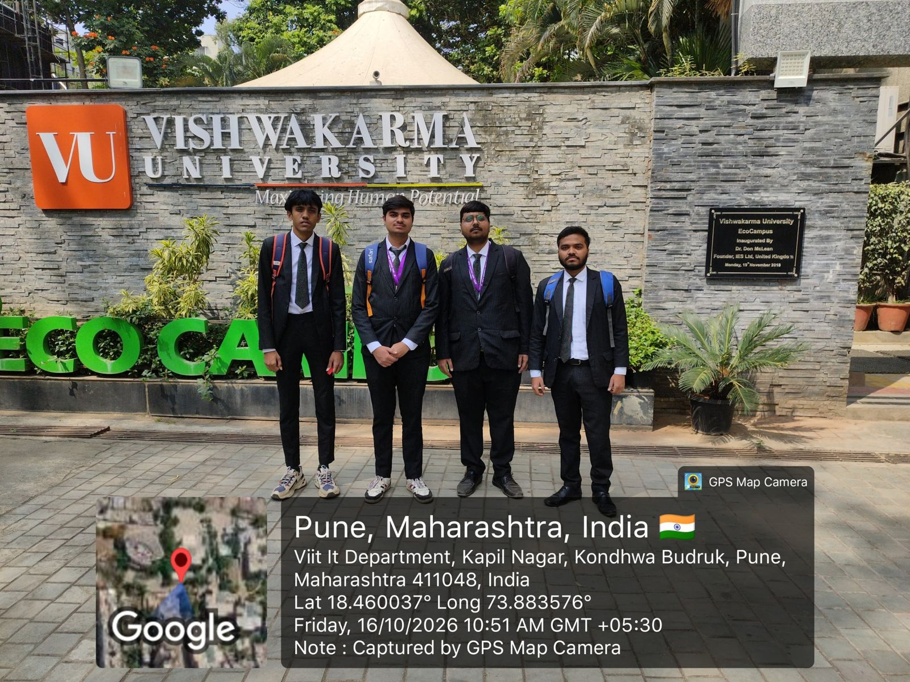
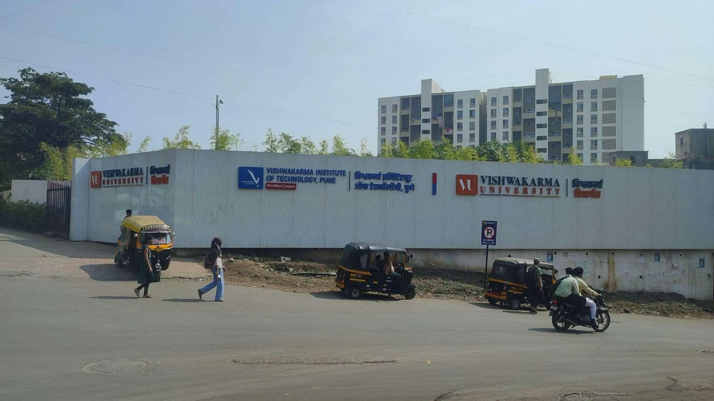

Field visit
Field visit gallery
Photographs from our visit to Vishwakarma University, Kondhwa Budruk, Pune. All photos were taken by our team in public areas of the campus.
Visit dateFriday, 16 October 2026
Time (GPS stamp)10:51 – 11:00 AM IST
LocationKondhwa Budruk, Pune 411048
Photos6

Team during visitSeen on visit
Left to right: Aaryan Ghadge, Dinesh Choudhary, Harshvardhan Rathod and Dhiraj Mourya at the VU Eco Campus sign. GPS stamp: 16 Oct 2026, 10:51 AM.



Smart vending machineFacilities
Touchscreen snack machine with an antenna on top, next to a building entrance. Phone numbers blurred.

CCTV dome cameraNetwork
Dome security camera mounted above a building entrance.

Campus road and buildingSeen on visit
Main campus road towards a VU academic building. GPS stamp: 16 Oct 2026, 11:00 AM.
Photo guidelines
How we handled photos
Every image on this site follows these four rules.
1Only public areas of the campus were photographed
2No close-up photos of other students
3No screens showing personal or student data
4Phone numbers blurred; no network labels or addresses shown